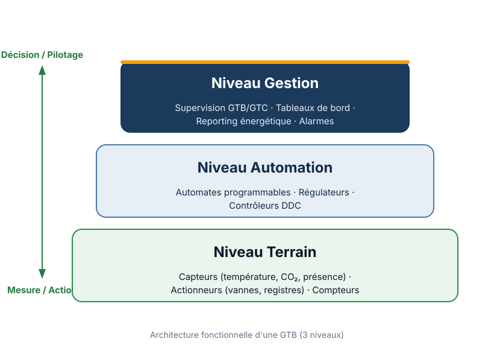
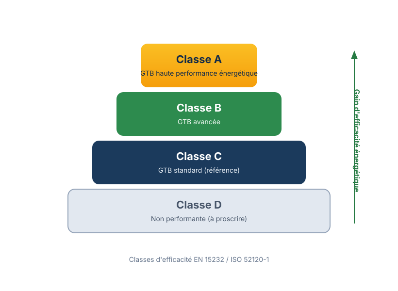
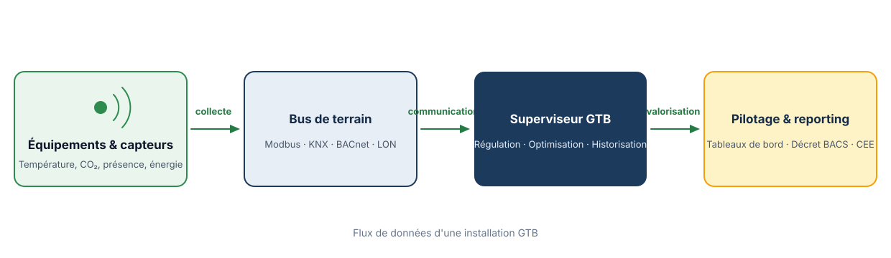

Schémas, icônes, bandeau de chiffres et jauges inspirés des dispositifs de smt-en.com, recolorés dans l'identité claire NeoGTB (marine, vert, doré). Ce fichier s'ouvre seul, sans serveur.
Vectoriels (SVG), nets à toutes les tailles. À utiliser comme image dans un brick (hero, carte, texte enrichi).

Gestion · Automation · Terrain. Pour la page GTB ou Solutions.

Classes D → A. Pour Réglementation / Décret BACS.

Capteurs → Bus de terrain → Superviseur → Pilotage. Idéal en bandeau pleine largeur.
Dans le brick « Cartes », saisis simplement icon:nom dans le champ icône.
Bureaux, écoles, hôpitaux, collectivités. icon:batiment
Température, CO₂, présence, énergie. icon:capteur
Pilotage, tableaux de bord, alarmes. icon:supervision
GTB de classe B (ISO 52120-1). icon:conformite
État des lieux selon ISO 52120-1. icon:audit
Modbus, KNX, BACnet, LON. icon:reseau
Chauffage, ventilation, climatisation. icon:thermometre
Valorisation BAT-TH-116. icon:euro
Valeurs factuelles déjà affirmées sur le site — aucun compteur fabriqué.
La valeur est toujours un paramètre, à brancher sur une donnée réelle. Exemples d'affichage :
| Visuel | Comment l'intégrer | Page / brick |
|---|---|---|
| Schémas GTB | Champ image d'un brick → coller /images/schemas/…svg | GTB, Solutions, Réglementation |
| Icônes GTB | Brick Cartes → champ icône = icon:capteur | Accueil, Offres, Solutions |
| Bandeau de chiffres | Brick « Chiffres clés » → variante bandeau + valeurs réelles | Accueil, À propos |
| Jauges | Composant <x-front.shared.gauge-progress> (dev) | Audit, dossiers |
| Photos hero | Générer via les prompts puis remplacer /images/hero-*.webp | docs/refs-design/prompts-visuels.md |
docs/refs-design/prompts-visuels.md contient les prompts à copier dans un générateur d'images (Midjourney, DALL·E, Flux) pour les créer.